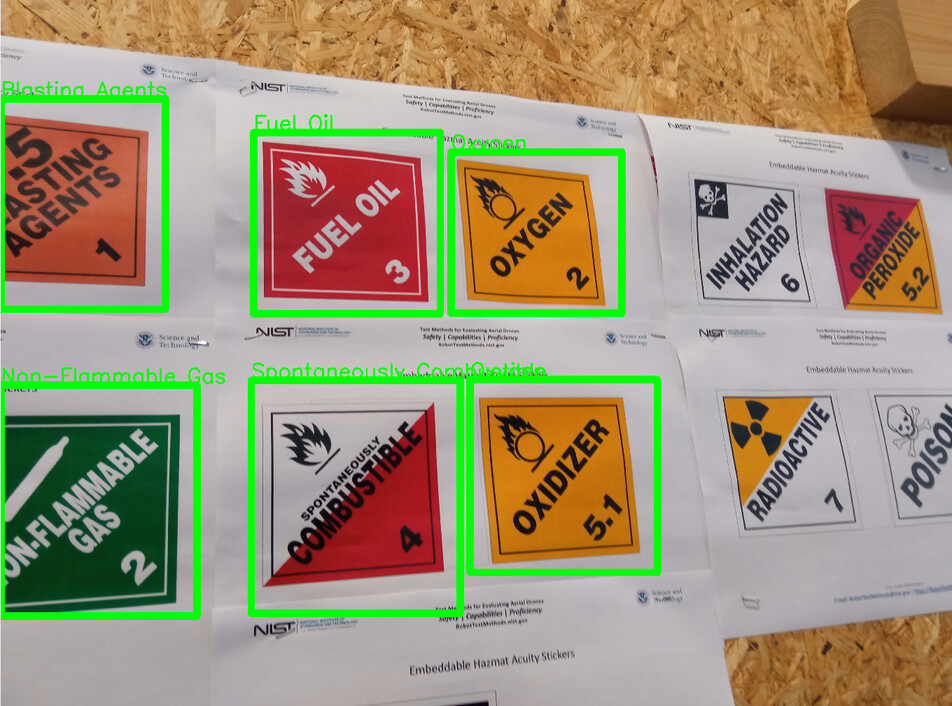

Our Software made by Zsolti Vadász
Training an object detection model
Last time, one of the most challanging aspects of the competition was the object detection feature robots needed. Back in in Bordeaux, we failed to detect anything and got 0 points for object detection. We definitely needed to improve on that.
Firstly, we found a large enough dataset on the internet (1k+ photos), which was a godsend because it spared us from having to manually take pictures and tag them.
Secondly, we switched from the outdated YoloV5 to the up-to-date YoloV8 which is supposedly better in every single way. We chose the small version, because the larger the model, the slower inference is, and while performance doesn’t really matter when training, one can simply leave their computer running while they are not home, it is still vital during inference, because our laptops are not on par with our workstations at home.
To use our model, we wrote a script named kokanyrecognize at the last minute. It wasn’t very performant nor really clean, so we spent a significant amount of time working on it. So far it was rewritten to use the new model, however it still has a long way to go.
Here is the result so far:
Video and audio streaming
During tests, operators are only allowed to see the arenas from their robot’s point of view. This meant we needed a way to find a way to display the video data from the robot’s camera.
Multimedia related tasks are surprisingly computation heavy when one is working with embedded systems. The CPU in the Raspberry Pi 4B+ is fairly capable, however we also had to consider power draw and thermal related problems. We considered several video formats: H.265, AV1 and H.264, but in the end we settled on using good old H.264 for a few reasons:
- Newer formats use more CPU cycles, increasing temperature and power draw
- We use a Cat5e ethernet cable so the savings in size are moot
- The Pi 4 has a hardware H.264 encoder
For audio, we considered several formats, both lossy and lossless, but since audio data isn’t that large anyway, and compressing it still takes some processing power, we settled on using plain WAVE.
To implement the actual capturing and transmission we used a simple FFmpeg commandline in a shell script. We picked FFmpeg because as its project page suggests, it's a multimedia swiss army knife that can handle a wide array of use cases, including point-to-point streaming via TCP, allowing us to reduce the infrastructure required to transmit the audiovisual data.
On the client side, we implemented the decoding of the video data using FFmpeg’s libavformat and libavcodec libraries. Rendering the video frames was tricky to figure out because pretty much all video encoders store pixels in YCbCr colour space, which SDL isn’t the best for.
The APIs of the libav* libraries are huge. Thankfully we only really needed the high level decoding API. The Learn FFmpeg libav the Hard Way tutorial combined with the examples in the project's documentation also made things much easier.
- We learned how to make printed circuit board designs using KiCAD.
Software packages used
| libgpiod | DC motor control, sensor control, stepper control |
| libi2c | Communicating with the MCP23017 |
| OpenCV | Image recognition |
| FFmpeg | Video streaming, Image recognition backend (used by OpenCV) |
| SDL2 | Used by KókányControl to process keyboard input and display video |
| SDL2_ttf | Used by KókányControl to draw text for displaying sensor data |
| SDL2_net | Used by KókányControl to handle networking |
| libzbar | Used for QR code detection |
| YoloV8 (small) | The model we use for object detection |
| RMRC Dataset | Dataset used for training our image recognition model |
| undefined medium | The font used in kokanyctl |